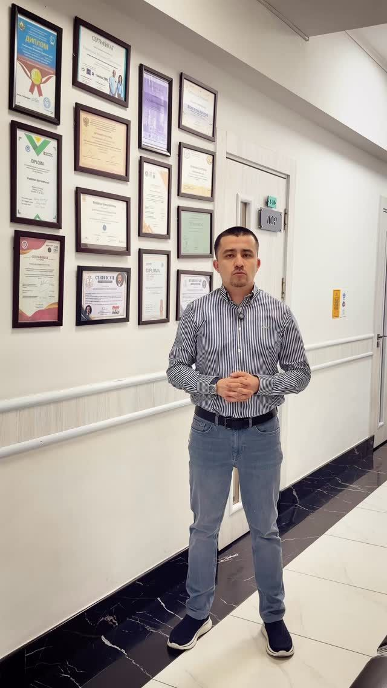

Что вас беспокоит?
Навигатор по симптомам: ухо, нос, горло — от жалобы к записи на консультацию.
Открыть →Международный пациент
3D‑глобус: пациенты из Казахстана, Кыргызстана, Таджикистана, России — путь к операции в Ташкенте.
Открыть →
03Хирург
Личная страница врача и 3D‑маршрут обучения: Киров, Москва, Грац, Тричи, Пьяченца.
Открыть →Библиотека случаев
121 клинический случай: 3D‑видеолента, поиск и фильтры по диагнозам.
Открыть →